Text Preprocessing#
Tugas 2 mengolah 200 artikel detik.com (100 sport, 100 finance) dari
dataset_berita_detik.csv yang dikumpulkan pada Tugas 1. Tujuannya mengubah
teks mentah menjadi angka yang siap diproses: teks dieksplorasi, dibersihkan,
dibakukan, dilabeli kategori kata, lalu dipetakan ke vektor TF-IDF dan diringkas
dengan PCA..
Eksplorasi Awal#
Sebelum transformasi, data diperiksa untuk mencari anomali: kelengkapan baris dan label, sebaran panjang teks per label, karakter di luar ASCII, serta sisa antarmuka situs. Temuan di sini menjadi dasar aturan pembersihan pada seksi berikutnya.
import pandas as pd
df = pd.read_csv("dataset_berita_detik.csv")
checks = pd.DataFrame({
"pemeriksaan": ["jumlah baris", "nilai kosong", "baris ganda",
"URL ganda", "urutan id", "jumlah per label"],
"hasil": [len(df), df.isna().sum().sum(), df.duplicated().sum(),
df["url"].duplicated().sum(),
"lengkap 1-200" if list(df["id"]) == list(range(1, len(df) + 1))
else "tidak urut",
"; ".join(f"{k}: {v}"
for k, v in df["label"].value_counts().items())],
})
checks
---------------------------------------------------------------------------
ModuleNotFoundError Traceback (most recent call last)
Cell In[1], line 1
----> 1 import pandas as pd
3 df = pd.read_csv("dataset_berita_detik.csv")
5 checks = pd.DataFrame({
6 "pemeriksaan": ["jumlah baris", "nilai kosong", "baris ganda",
7 "URL ganda", "urutan id", "jumlah per label"],
(...)
13 for k, v in df["label"].value_counts().items())],
14 })
ModuleNotFoundError: No module named 'pandas'
df[["id", "label", "url"]].head()
| id | label | url | |
|---|---|---|---|
| 0 | 1 | sport | https://sport.detik.com/moto-gp/d-8666386/marc... |
| 1 | 2 | sport | https://sport.detik.com/fotosport/d-8666341/me... |
| 2 | 3 | sport | https://sport.detik.com/moto-gp/d-8666308/ai-o... |
| 3 | 4 | sport | https://sport.detik.com/g-sport/d-8666151/ketu... |
| 4 | 5 | sport | https://sport.detik.com/sport-lain/d-8666068/u... |
Length by Label#
Panjang karakter dan jumlah kata dirangkum per label, lalu digambar sebagai diagram kotak. Perbandingan ini menunjukkan apakah teks sport dan finance berbeda jauh sebelum diproses.
stats = (df.assign(panjang_karakter=df["isi_berita"].str.len(),jumlah_kata=df["isi_berita"].str.split().str.len())
.groupby("label")[["panjang_karakter", "jumlah_kata"]]
.agg(["min", "median", "max"]))
stats
| panjang_karakter | jumlah_kata | |||||
|---|---|---|---|---|---|---|
| min | median | max | min | median | max | |
| label | ||||||
| finance | 224 | 2331.0 | 7078 | 31 | 326.0 | 953 |
| sport | 246 | 2026.5 | 7149 | 35 | 294.5 | 974 |
import matplotlib.pyplot as plt
import seaborn as sns
fig, ax = plt.subplots(figsize=(6, 3.5))
sns.boxplot(data=df, x="label", y=df["isi_berita"].str.len() / 1000, ax=ax)
ax.set_ylabel("panjang teks (ribu karakter)")
plt.show()
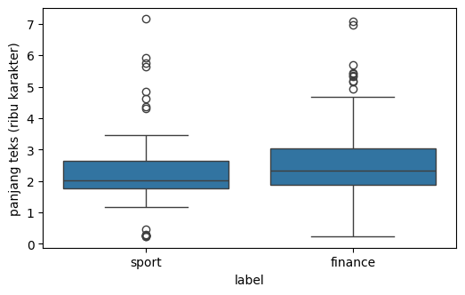
Character Inventory#
Karakter di luar ASCII (misal aksen hasil transliterasi nama, tanda kutip melengkung, atau emoji) diinventarisasi dulu. Aksen seperti é atau tanda hubung non-ASCII akan dianggap karakter asing saat tokenisasi, jadi setiap kemunculannya dinormalisasi ke padanan ASCII.
def chars_outside_ascii(text):
return sorted({c for c in text if ord(c) > 127})
rows = []
for _, r in df.iterrows():
extra = chars_outside_ascii(r["isi_berita"])
if extra:
rows.append({"id": r["id"],
"label": r["label"],
"karakter": " ".join(extra)})
character_inventory = pd.DataFrame(
rows,
columns=["id", "label", "karakter"]
)
display(character_inventory)
| id | label | karakter | |
|---|---|---|---|
| 0 | 36 | sport | — ™ 🇲 🇸 🏁 🤯 |
| 1 | 46 | sport | — ™ 🇲 🇸 🏁 😱 |
| 2 | 47 | sport | — ™ 🇲 🇸 🏁 🏆 |
| 3 | 197 | finance | • |
import unicodedata
def normalize_letters(text):
decomposed = unicodedata.normalize("NFD", text)
text = "".join(c for c in decomposed if not unicodedata.combining(c))
return text.replace("\u2011", "-").replace("\u2010", "-")
def around_first(text, window=30):
pos = next(i for i, c in enumerate(text) if ord(c) > 127)
return text[max(0, pos - window):pos + window]
ids = [r["id"] for r in rows][:6]
sample = df.set_index("id").loc[ids, "isi_berita"]
pd.DataFrame({
"id": sample.index,
"sebelum": [around_first(t) for t in sample],
"sesudah": [normalize_letters(around_first(t)) for t in sample],
})
| id | sebelum | sesudah | |
|---|---|---|---|
| 0 | 36 | nges in the #MotoGP standings 🤯#SanMarinoGP 🇸🇲... | nges in the #MotoGP standings 🤯#SanMarinoGP 🇸🇲... |
| 1 | 46 | a kalinya. EARLY EARLY DRAMA! — MotoGP™🏁 (@Mot... | a kalinya. EARLY EARLY DRAMA! — MotoGP™🏁 (@Mot... |
| 2 | 47 | k musim MotoGP 2026 bergulir. 🏆 @marcmarquez93... | k musim MotoGP 2026 bergulir. 🏆 @marcmarquez93... |
| 3 | 197 | ejumlah manfaat, antara lain: • Perlindungan P... | ejumlah manfaat, antara lain: • Perlindungan P... |
Boilerplate Check#
Artikel hasil crawling membawa sisa antarmuka detik.com: penutup
Anda menyukai artikel ini Artikel disimpan, kode redaksi dalam kurung seperti
(krs/nds), dan artikel foto yang hanya berisi keterangan pendek dengan awalan
Foto Sport. Sisa seperti ini muncul di hampir semua dokumen sehingga tidak
membedakan kelas, jadi dicacah dulu sebelum diputuskan untuk dibuang.
from collections import Counter
tail = Counter(" ".join(t.split()[-6:]) for t in df["isi_berita"])
pd.DataFrame(tail.most_common(5), columns=["enam kata terakhir", "jumlah"])
| enam kata terakhir | jumlah | |
|---|---|---|
| 0 | Anda menyukai artikel ini Artikel disimpan | 197 |
| 1 | 9,5%," pungkasnya. Saksikan Live DetikPagi: (f... | 1 |
| 2 | pihak Summarecon. Saksikan Live DetikPagi: (ah... | 1 |
| 3 | dibiarin mangkrak begitu," jelas Dony (hrp/hns) | 1 |
byline_re = r"\(\w{2,6}(?:/\w{2,6})+\)"
boiler_re = rf"(?:{byline_re}\s*)?Anda menyukai artikel ini\s+Artikel disimpan\s*$"
photo_re = r"^Foto\s+(?:Sport|Finance)\s+"
texts = df["isi_berita"]
n_boiler = int(texts.str.contains(boiler_re).sum())
pd.DataFrame({
"pola": ["penutup 'Anda menyukai artikel ini'", "kode redaksi (krs/nds)",
"awalan 'Foto Sport' atau 'Foto Finance'",
"teks di bawah 500 karakter"],
"jumlah artikel": [n_boiler, int(texts.str.contains(byline_re).sum()),
int(texts.str.contains(photo_re).sum()),
int((texts.str.len() < 500).sum())],
})
| pola | jumlah artikel | |
|---|---|---|
| 0 | penutup 'Anda menyukai artikel ini' | 197 |
| 1 | kode redaksi (krs/nds) | 61 |
| 2 | awalan 'Foto Sport' atau 'Foto Finance' | 7 |
| 3 | teks di bawah 500 karakter | 12 |
Boilerplate Removal#
Penutup, kode redaksi, dan awalan foto dibuang dari teks. Awalan Foto Sport
ikut dibuang karena kata sport sama persis dengan nama label, sehingga bisa
menjadi petunjuk palsu bagi model. Perubahan dibuktikan lewat ujung teks
sebelum dan sesudah, lalu dicek bahwa tidak ada sisa penutup di seluruh korpus.
import re
def strip_boilerplate(text):
text = re.sub(photo_re, "", text)
return re.sub(boiler_re, "", text).strip()
sample = df["isi_berita"].head(3)
cleaned = sample.map(strip_boilerplate)
pd.DataFrame({
"id": df["id"].head(3),
"sebelum": [f"{t[:30]} ... {t[-55:]}" for t in sample],
"sesudah": [f"{t[:30]} ... {t[-55:]}" for t in cleaned],
})
| id | sebelum | sesudah | |
|---|---|---|---|
| 0 | 1 | Marc Marquez Disebut di Puncak ... n. (krs/nds... | Marc Marquez Disebut di Puncak ... arco Bezzec... |
| 1 | 2 | Foto Sport Melihat dari Dekat ... ar prestasi... | Melihat dari Dekat Latihan Par ... tan fisik m... |
| 2 | 3 | Ai Ogura Siap Comeback di Moto ... ." (krs/ran... | Ai Ogura Siap Comeback di Moto ... ani balapan... |
df["isi_berita"] = df["isi_berita"].map(strip_boilerplate)
df["isi_berita"].str.contains("Anda menyukai artikel ini").sum()
np.int64(0)
Number & Punctuation Removal#
Angka dan tanda baca tidak dianggap sebagai term, sehingga dipotong kasar dari teks. Pemotongan seperti itu meninggalkan artefak: token satu huruf, dua huruf, URL, lambang mata uang, komposit berangka, dan angka Romawi. Artefak dicacah dulu, lalu diputuskan satu per satu berdasarkan konteksnya.
Naive Token Count#
Pemotongan kasar dibuat dulu: huruf dikecilkan dan semua selain huruf diganti spasi sebelum token dihitung. Angka ini menjadi pembanding seberapa banyak token hilang setelah artefak dibuang.
def naive_tokens(text):
return re.sub(r"[^a-z\s]", " ", text.lower()).split()
naive = [w for doc in df["isi_berita"] for w in naive_tokens(doc)]
naive_counts = Counter(naive)
single = {w: n for w, n in naive_counts.items() if len(w) == 1}
double = {w: n for w, n in naive_counts.items() if len(w) == 2}
pd.DataFrame({
"metrik": ["token total", "kata unik", "token satu huruf",
"token dua huruf"],
"jumlah": [len(naive), len(naive_counts), sum(single.values()),
sum(double.values())],
"proporsi": ["100%", f"{100 * len(naive_counts) / len(naive):.2f}%",
f"{100 * sum(single.values()) / len(naive):.2f}%",
f"{100 * sum(double.values()) / len(naive):.2f}%"],
})
| metrik | jumlah | proporsi | |
|---|---|---|---|
| 0 | token total | 64919 | 100% |
| 1 | kata unik | 7311 | 11.26% |
| 2 | token satu huruf | 240 | 0.37% |
| 3 | token dua huruf | 2773 | 4.27% |
fig, ax = plt.subplots(figsize=(6, 2.8))
freq = sorted(single.items(), key=lambda x: -x[1])
ax.bar([w for w, _ in freq], [n for _, n in freq])
ax.set_xlabel("token satu huruf")
ax.set_ylabel("kemunculan")
plt.show()
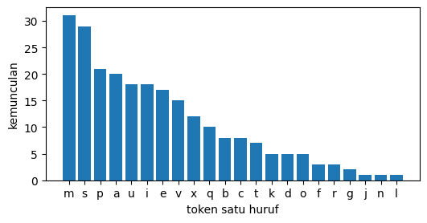
Single-Letter Guard#
Token satu huruf hampir pasti artefak sisa kalimat (seperti huruf “x” pada “3x3”). Konteks sembilan huruf yang paling sering muncul ditampilkan untuk memastikan hal ini sebelum diputuskan dibuang.
def context(texts, token, window=25):
for text in texts:
for m in re.finditer(r"(?<![A-Za-z])" + token + r"(?![A-Za-z])",
text, re.IGNORECASE):
start = max(0, m.start() - window)
return text[start:m.end() + window].replace("\n", " ")
top_single = [w for w, _ in sorted(single.items(), key=lambda x: -x[1])[:9]]
pd.DataFrame([{"huruf": w, "konteks": context(list(df["isi_berita"]), w)}
for w in top_single])
| huruf | konteks | |
|---|---|---|
| 0 | m | hampion Reborn Jogja) 4. M. Ramdani Mubarok - ... |
| 1 | s | alking lunges dan farmer's carry. Wietrzyk tet... |
| 2 | p | anya sekali naik podium (P2) dalam 61 seri ter... |
| 3 | a | 5 September 2026 di Hall A Gelanggang Mahasisw... |
| 4 | u | bola basket beregu putri U-15, bulu tangkis be... |
| 5 | i | kal Pertama (Marsma) TNI I.B. Ngurah Mardika P... |
| 6 | e | de Nacional Timor Lorosa'e (UNTL). Marciano me... |
| 7 | v | kembali berjaya di Seri V. Pada final ITF Wor... |
| 8 | x | Roster Timnas Basket 3x3 Putri Indonesia di Asia |
rows = [(w, n) for w, n in sorted(double.items(), key=lambda x: -x[1])
if n >= 3][:15]
fig, ax = plt.subplots(figsize=(7, 3.2))
ax.bar([w for w, _ in rows], [n for _, n in rows])
ax.set_xlabel("token dua huruf")
ax.set_ylabel("kemunculan")
plt.show()
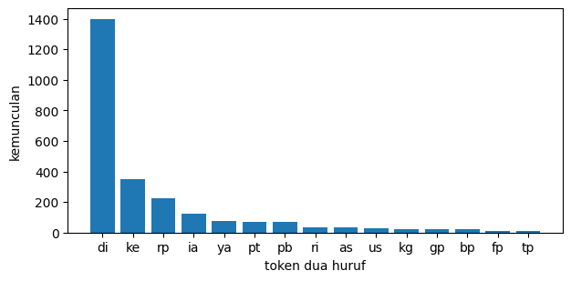
Two-Letter Decision#
Token dua huruf perlu diperiksa terpisah karena sebagian adalah kata singkat nyata. Tabel konteksnya lalu dibandingkan dengan daftar stopword Sastrawi: token yang terdaftar dipertahankan, sisanya dianggap artefak dan dipotong.
rows = []
for w, n in sorted(double.items(), key=lambda x: -x[1]):
if n >= 3:
rows.append({"token": w, "jumlah": n,
"konteks": context(list(df["isi_berita"]), w)})
pd.DataFrame(rows)
| token | jumlah | konteks | |
|---|---|---|---|
| 0 | di | 1398 | Marc Marquez Disebut di Puncak Karier, Bahasan C |
| 1 | ke | 347 | Ai Ogura bersiap kembali ke arena MotoGP pada ... |
| 2 | rp | 224 | angga senilai lebih dari Rp 4 juta. Tas beruku... |
| 3 | ia | 124 | n dari maksimal 37 poin. Ia pun disebut sedang... |
| 4 | ya | 78 | ar lagi. Bagas juga sama ya sudah kita hajar s... |
| 5 | pt | 72 | epada Djarum Foundation, PT Bank Rakyat Indone... |
| 6 | pb | 67 | a tim teknis khusus dari PB PASI, sehingga mat... |
| 7 | ri | 32 | umni PPRA LXII Lemhannas RI itu. Tak hanya atl... |
| 8 | as | 32 | ak atas hadiah 930 dolar AS, serta tambahan 15... |
| 9 | us | 31 | Zverev Juara US Open 2026 Usai Kalahkan |
| 10 | kg | 24 | ya akan turun di kelas 65kg dan Asian Games di... |
| 11 | gp | 23 | ali menggeber Aprilia RS-GP26. Jika dapat lamp... |
| 12 | bp | 20 | dengan Badan Pengaturan (BP) BUMN serta PT Agr... |
| 13 | fp | 13 | r 2026 14.00 WIB - Moto3 FP1 14.50 WIB - Moto2... |
| 14 | tp | 12 | i INCO - Buy 4800-4820 | TP 4880-4980 | SL 454... |
| 15 | ku | 11 | lompok usia, yakni U-11, KU 11, dan KU 12. Sem... |
| 16 | km | 11 | rai ini, Panjangnya 12,2 km, Investasinya Rp 1... |
| 17 | sl | 10 | 00-4820 | TP 4880-4980 | SL 4540 MITI - Buy 28... |
| 18 | cc | 9 | P. Mantan juara dunia 500cc, Alex Criville, me... |
| 19 | up | 9 | menjadi bagian dari line-up baru Tech3 bersama... |
| 20 | ii | 9 | ri oleh Wakil Ketua Umum II KONI DKI Jakarta, ... |
| 21 | nr | 9 | IB - Moto3 Free Practice Nr. 2 - 14.25-14.55 W... |
| 22 | pp | 8 | at Kickboxing Indonesia (PP KBI) periode 2026-... |
| 23 | rc | 8 | Acosta SPA Red Bull KTM (RC16) +2.326s 4 Fermi... |
| 24 | to | 8 | ous. Bermain lah nothing to lose. Karena saya ... |
| 25 | ai | 7 | Ai Ogura Siap Comeback di M |
| 26 | vr | 7 | Marquez, Pedro Acosta - VR46 Ducati: Fermin A... |
| 27 | el | 7 | yang bernaung di Ducati? El Diablo akan mengak... |
| 28 | of | 7 | nya. Bold Riders, Spirit of Brotherhood! |
| 29 | ab | 7 | terdapat Anggota Bursa (AB) yang belum siap m... |
| 30 | am | 7 | Sucor Asset Management (AM), Dimas Yusuf, men... |
| 31 | oh | 6 | annya saja sih. Seperti 'Oh mainnya seperti in... |
| 32 | iv | 5 | digelar Kualifikasi IWF IV yang digelar pada ... |
| 33 | al | 5 | mmad Tegar Januar, Leica Al Humaira Lubis, Cok... |
| 34 | an | 5 | n Sam di level Rp 17.700-an pagi ini. Dikutip ... |
| 35 | rs | 4 | embali menggeber Aprilia RS-GP26. Jika dapat l... |
| 36 | de | 4 | Confederacao Do Desporto De Timor Leste (CDTL)... |
| 37 | se | 4 | I di multievent terbesar se-Asia empat tahunan... |
| 38 | rx | 4 | gelar dua kategori yaitu RX1 dan RX5. "Mulai h... |
| 39 | vs | 4 | ujarnya. Marco Bezzecchi Vs Marc Marquez 7 Mai... |
| 40 | tc | 4 | Tim Bulutangkis RI TC di Tokyo Sebelum Berjuan |
| 41 | id | 4 | an https://sscasn.bkn.go.id/. Lihat juga Video... |
| 42 | ex | 4 | 39 tahun. Apalagi kapal ex Jepang mempunyai t... |
| 43 | ev | 3 | obil listrik Wuling Aira EV. Perhelatan sport ... |
| 44 | la | 3 | ih Incar Tiket Olimpiade LA 2028 Atlet angkat ... |
| 45 | by | 3 | aching staff komit, game by game anak-anak bis... |
| 46 | bk | 3 | lain. Alex Marquez dari BK8 Gresini Racing Mo... |
| 47 | au | 3 | " papar purnawirawan TNI-AU tersebut. Tim Kara... |
| 48 | no | 3 | h mulai tahun lalu. Jadi no dramas-lah, nggak ... |
| 49 | ie | 3 | Sebanyak 7 trainset KRL iE305/CLI 225 tengah ... |
| 50 | wi | 3 | ara pengenalan teknologi Wi-Fi 8 di Kuala Lump... |
| 51 | fi | 3 | pengenalan teknologi Wi-Fi 8 di Kuala Lumpur,... |
from Sastrawi.StopWordRemover.StopWordRemoverFactory import StopWordRemoverFactory
id_stopwords = set(StopWordRemoverFactory().get_stop_words())
tokens_2huruf = [w for w, n in double.items() if n >= 3]
(pd.DataFrame({"token": tokens_2huruf,
"jumlah": [double[w] for w in tokens_2huruf],
"stopword Indonesia": [w in id_stopwords
for w in tokens_2huruf]})
.sort_values("jumlah", ascending=False))
| token | jumlah | stopword Indonesia | |
|---|---|---|---|
| 0 | di | 1398 | True |
| 4 | ke | 347 | True |
| 11 | rp | 224 | False |
| 1 | ia | 124 | True |
| 10 | ya | 78 | True |
| 36 | pt | 72 | False |
| 9 | pb | 67 | False |
| 19 | ri | 32 | False |
| 34 | as | 32 | False |
| 30 | us | 31 | False |
| 23 | kg | 24 | False |
| 6 | gp | 23 | False |
| 39 | bp | 20 | False |
| 17 | fp | 13 | False |
| 41 | tp | 12 | False |
| 48 | km | 11 | False |
| 31 | ku | 11 | False |
| 42 | sl | 10 | False |
| 14 | up | 9 | False |
| 2 | cc | 9 | False |
| 20 | ii | 9 | False |
| 35 | nr | 9 | False |
| 8 | pp | 8 | False |
| 37 | to | 8 | False |
| 33 | rc | 8 | False |
| 18 | el | 7 | False |
| 15 | vr | 7 | False |
| 3 | ai | 7 | False |
| 46 | am | 7 | False |
| 45 | ab | 7 | False |
| 27 | of | 7 | False |
| 13 | oh | 6 | True |
| 40 | an | 5 | False |
| 24 | iv | 5 | False |
| 28 | al | 5 | False |
| 5 | rs | 4 | False |
| 21 | rx | 4 | False |
| 16 | se | 4 | False |
| 7 | de | 4 | False |
| 38 | tc | 4 | False |
| 51 | ex | 4 | False |
| 32 | vs | 4 | False |
| 44 | id | 4 | False |
| 12 | ev | 3 | False |
| 29 | au | 3 | False |
| 22 | la | 3 | False |
| 25 | by | 3 | False |
| 26 | bk | 3 | False |
| 43 | no | 3 | False |
| 47 | ie | 3 | False |
| 49 | wi | 3 | False |
| 50 | fi | 3 | False |
Format Artifacts#
Empat pola artefak format dicacah: URL, komposit alfanumerik atau kata berangka, lambang mata uang, dan angka Romawi. Pola ini dilindungi utuh sebelum simbolnya dibuang, agar nilainya tidak ikut terbaca sebagai term.
url_pattern = re.compile(r"(?:https?://|www\.|pic\.twitter\.com/)\S+")
alnum_pattern = re.compile(
r"\b(?=[A-Za-z]*\d)[A-Za-z0-9][A-Za-z0-9.*-]*\b")
currency_pattern = re.compile(
r"\bRp\d[\d.,]*\b|\bUS\$\d[\d.,]*\b|\b\$\d[\d.,]*\b|\bRp\b|\bUS\$\b")
roman_pattern = re.compile(
r"\b(?:iii|iv|vi{0,3}|i[ivx]{0,2}|v|x{1,3}|xi{0,3})\b", re.IGNORECASE)
def first_match(pattern):
for t in df["isi_berita"]:
found = pattern.findall(t)
if found:
return found[0]
return "-"
n_url = sum(len(url_pattern.findall(t)) for t in df["isi_berita"])
n_alnum = sum(len(alnum_pattern.findall(t)) for t in df["isi_berita"])
n_curr = sum(len(currency_pattern.findall(t)) for t in df["isi_berita"])
n_roman = sum(len(roman_pattern.findall(t)) for t in df["isi_berita"])
pd.DataFrame({
"jenis": ["URL", "komposit alfanumerik dan angka", "lambang mata uang",
"angka Romawi"],
"kemunculan": [n_url, n_alnum, n_curr, n_roman],
"contoh": [first_match(p) for p in (url_pattern, alnum_pattern,
currency_pattern, roman_pattern)],
})
| jenis | kemunculan | contoh | |
|---|---|---|---|
| 0 | URL | 4 | pic.twitter.com/9J4elWJLPZ |
| 1 | komposit alfanumerik dan angka | 3508 | 2026 |
| 2 | lambang mata uang | 225 | Rp |
| 3 | angka Romawi | 56 | II |
def protect(text):
text = url_pattern.sub(" ", text)
text = currency_pattern.sub(" ", text)
text = alnum_pattern.sub(" ", text)
text = roman_pattern.sub(" ", text)
return text.replace("\u2011", "-")
def clean_part1(text):
text = normalize_letters(protect(text))
text = re.sub(r"[^A-Za-z\s-]", " ", text)
text = re.sub(r"-+", " ", text)
return " ".join(w for w in text.split() if len(w) >= 2)
corpus_clean_1 = [clean_part1(t) for t in df["isi_berita"]]
tokens_1 = [w.lower() for doc in corpus_clean_1 for w in doc.split()]
counts_1 = Counter(tokens_1)
pd.DataFrame({
"kondisi": ["naif (teks dasar)", "setelah proteksi dan strip (min. 2 huruf)"],
"token total": [len(naive), len(tokens_1)],
"kata unik": [len(naive_counts), len(counts_1)],
"token satu huruf": [sum(single.values()),
sum(n for w, n in counts_1.items() if len(w) == 1)],
"token dua huruf": [sum(double.values()),
sum(n for w, n in counts_1.items() if len(w) == 2)],
})
| kondisi | token total | kata unik | token satu huruf | token dua huruf | |
|---|---|---|---|---|---|
| 0 | naif (teks dasar) | 64919 | 7311 | 240 | 2773 |
| 1 | setelah proteksi dan strip (min. 2 huruf) | 64260 | 7256 | 0 | 2444 |
left = ["token total", "kata unik", "token dua huruf"]
before = [len(naive), len(naive_counts), sum(double.values())]
after = [len(tokens_1), len(counts_1),
sum(n for w, n in counts_1.items() if len(w) == 2)]
fig, ax = plt.subplots(figsize=(6, 3))
w = 0.35
ax.bar([i - w / 2 for i in range(3)], before, width=w, label="sebelum")
ax.bar([i + w / 2 for i in range(3)], after, width=w, label="sesudah")
ax.set_xticks(range(3))
ax.set_xticklabels(left)
ax.set_ylabel("jumlah token")
ax.legend()
plt.show()
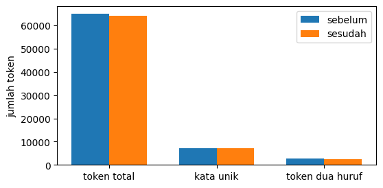
Slang Standardization#
Sebelum kata tidak baku dibakukan, dipastikan korpus ini berbahasa Indonesia: sisipan asing dicek per kalimat dan per kata. Temuan di tahap ini menuntun kebijakan untuk nama dan istilah yang tidak boleh ikut dinormalisasi.
import langid
sentences, article_ids = [], []
for _, row in df.iterrows():
parts = [p.strip()
for p in re.split(r"(?<=[.!?])\s+|\n+", row["isi_berita"])
if p.strip()]
sentences.extend(parts)
article_ids.extend([row["id"]] * len(parts))
lang_labels = [langid.classify(s)[0] for s in sentences]
lang_counts = Counter(lang_labels)
(pd.DataFrame({"bahasa": list(lang_counts),
"kalimat": list(lang_counts.values()),
"proporsi": [f"{100 * k / len(sentences):.1f}%"
for k in lang_counts.values()]})
.sort_values("kalimat", ascending=False))
| bahasa | kalimat | proporsi | |
|---|---|---|---|
| 0 | id | 3332 | 77.9% |
| 1 | ms | 627 | 14.7% |
| 9 | en | 67 | 1.6% |
| 23 | it | 45 | 1.1% |
| 2 | es | 32 | 0.7% |
| 7 | jv | 23 | 0.5% |
| 10 | de | 22 | 0.5% |
| 6 | eu | 21 | 0.5% |
| 5 | tl | 20 | 0.5% |
| 28 | da | 10 | 0.2% |
| 14 | sv | 7 | 0.2% |
| 4 | fr | 7 | 0.2% |
| 12 | eo | 7 | 0.2% |
| 22 | sw | 6 | 0.1% |
| 25 | lt | 5 | 0.1% |
| 27 | pt | 5 | 0.1% |
| 32 | et | 5 | 0.1% |
| 11 | nl | 4 | 0.1% |
| 26 | mt | 4 | 0.1% |
| 20 | pl | 4 | 0.1% |
| 21 | fi | 3 | 0.1% |
| 19 | rw | 3 | 0.1% |
| 15 | ca | 2 | 0.0% |
| 13 | xh | 2 | 0.0% |
| 29 | br | 2 | 0.0% |
| 17 | sl | 2 | 0.0% |
| 18 | mg | 2 | 0.0% |
| 16 | hr | 1 | 0.0% |
| 3 | la | 1 | 0.0% |
| 8 | sk | 1 | 0.0% |
| 24 | ar | 1 | 0.0% |
| 30 | ro | 1 | 0.0% |
| 31 | zu | 1 | 0.0% |
| 33 | cs | 1 | 0.0% |
en_long = []
for s, lang, aid in zip(sentences, lang_labels, article_ids):
if lang == "en" and len(s.split()) >= 8:
en_long.append({"id": aid, "kalimat": s})
(pd.DataFrame(en_long, columns=["id", "kalimat"]).assign(kalimat=lambda d: d["kalimat"].str[:96] + "..."))
| id | kalimat | |
|---|---|---|
| 0 | 42 | Vicky Lee Alison - Tegal (PB Sinar Mutiara) 4.... |
| 1 | 42 | Karina Frederika Putri Loen - Kota Depok (PB C... |
| 2 | 42 | Azka Azfar Rabbani - Kabupaten Purworejo (PB G... |
| 3 | 42 | Ghian Ahza Danish Adinata - Kota Surakarta (PB... |
| 4 | 66 | Melengkapi front row ada Brian Uriarte dan Joe... |
| 5 | 68 | 2 - 14.25-14.55 WIB - Moto2 Free Practice Nr.... |
| 6 | 68 | 2 - 15.10-15.40 WIB - MotoGP Free Practice Nr.... |
| 7 | 68 | 2 - 15.50-16.05 WIB - MotoGP Qualifying Nr.... |
| 8 | 68 | 1 - 16.15-16.30 WIB - MotoGP Qualifying Nr.... |
| 9 | 68 | 2 - 17.45-18.00 WIB - Moto3 Qualifying Nr.... |
| 10 | 68 | 1 - 18.10-18.25 WIB - Moto3 Qualifying Nr.... |
| 11 | 68 | 2 - 18.40-18.55 WIB - Moto2 Qualifying Nr.... |
| 12 | 68 | 1 - 19.05-19.20 WIB - Moto2 Qualifying Nr.... |
| 13 | 68 | 2 - 20.00 WIB - MotoGP Sprint - 13 lap... |
| 14 | 84 | Nuwie Fourtwnty, The Diegos, Adella Johana, Bo... |
| 15 | 102 | Dalam tahun 2050, which is 25 tahun ke depan,"... |
Word Probe#
langid dilatih untuk teks panjang; pada kata tunggal pendek hasilnya sering
bias. Beberapa kata Indonesia yang sangat umum dicoba satu per satu sebagai
baseline: tabel di bawah menunjukkan label yang seharusnya jelas tetapi keliru.
Inilah alasan deteksi per-kata tidak dipakai.
token_in_en = Counter()
for s, lang in zip(sentences, lang_labels):
if lang == "en" and len(s.split()) >= 8:
token_in_en.update(re.findall(r"[A-Za-z]+", s.lower()))
corpus_words = Counter(
w for t in df["isi_berita"] for w in re.findall(r"[A-Za-z]+", t.lower()))
cap_forms = Counter(
w.lower() for t in df["isi_berita"]
for w in re.findall(r"[A-Za-z]+", t) if w[0].isupper())
pd.DataFrame([{"kata": w, "di kalimat en": n, "total korpus": corpus_words[w],
"muncul kapital": cap_forms[w]}
for w, n in token_in_en.most_common(20)])
| kata | di kalimat en | total korpus | muncul kapital | |
|---|---|---|---|---|
| 0 | wib | 9 | 54 | 54 |
| 1 | nr | 8 | 9 | 9 |
| 2 | qualifying | 6 | 6 | 6 |
| 3 | moto | 5 | 55 | 53 |
| 4 | pb | 4 | 67 | 67 |
| 5 | motogp | 4 | 185 | 185 |
| 6 | kota | 2 | 60 | 41 |
| 7 | free | 2 | 4 | 4 |
| 8 | practice | 2 | 18 | 12 |
| 9 | tahun | 2 | 209 | 35 |
| 10 | vicky | 1 | 1 | 1 |
| 11 | lee | 1 | 3 | 3 |
| 12 | alison | 1 | 1 | 1 |
| 13 | tegal | 1 | 1 | 1 |
| 14 | sinar | 1 | 1 | 1 |
| 15 | mutiara | 1 | 2 | 2 |
| 16 | karina | 1 | 1 | 1 |
| 17 | frederika | 1 | 1 | 1 |
| 18 | putri | 1 | 63 | 25 |
| 19 | loen | 1 | 1 | 1 |
Name Protection#
Nama diri dicacah lewat bukti kapital di tengah kalimat: kata berawal huruf besar yang tidak memulai kalimat hampir pasti nama orang atau lembaga. Judul artikel menyatu dengan isi tanpa pemisah, sehingga kata berkapital di judul ikut masuk daftar kandidat; ambang dominasi kapital pada tahap stemming nanti yang menyaringnya. Daftarnya menjadi dasar perlindungan dari normalisasi slang dan stemming.
def mid_sentence(text, pos):
i = pos - 1
while i >= 0 and text[i] in ' \n\t"\'":(':
i -= 1
return i >= 0 and text[i] not in '.!?;:(\u2013\u2014'
name_counts = Counter()
raw_counts = Counter()
for text in df["isi_berita"]:
for m in re.finditer(r"[A-Za-z]+", text):
w = m.group(0)
raw_counts[w.lower()] += 1
if (len(w) >= 3 and w[0].isupper()
and mid_sentence(text, m.start())):
name_counts[w.lower()] += 1
pd.DataFrame({
"metrik": ["nama diri unik", "kemunculan total",
"nama dengan >= 3 kemunculan"],
"jumlah": [len(name_counts), sum(name_counts.values()),
sum(1 for n in name_counts.values() if n >= 3)],
})
| metrik | jumlah | |
|---|---|---|
| 0 | nama diri unik | 3197 |
| 1 | kemunculan total | 13836 |
| 2 | nama dengan >= 3 kemunculan | 1044 |
pd.DataFrame([{"nama": w, "kemunculan": n}
for w, n in name_counts.most_common(15)])
| nama | kemunculan | |
|---|---|---|
| 0 | indonesia | 346 |
| 1 | jakarta | 280 |
| 2 | motogp | 167 |
| 3 | marquez | 140 |
| 4 | games | 127 |
| 5 | asian | 106 |
| 6 | purbaya | 97 |
| 7 | prabowo | 94 |
| 8 | san | 93 |
| 9 | marino | 92 |
| 10 | marc | 90 |
| 11 | lrt | 89 |
| 12 | suahasil | 84 |
| 13 | rabu | 82 |
| 14 | september | 81 |
Slang Candidates#
Kandidat slang dicari lewat kamus indoNLP: token yang berubah oleh
replace_slang dicatat kemunculannya. Yang bertepatan muncul kapital di tengah
kalimat kemungkinan nama, sehingga diberi tanda untuk pemeriksaan manual.
from indoNLP.preprocessing import replace_slang
slang_hit = Counter()
cap_hit = Counter()
for text in df["isi_berita"]:
for m in re.finditer(r"[A-Za-z]+", text):
w = m.group(0)
if replace_slang(w.lower()) != w.lower():
slang_hit[w.lower()] += 1
if w[0].isupper() and mid_sentence(text, m.start()):
cap_hit[w.lower()] += 1
pd.DataFrame({
"metrik": ["token kena kamus", "kemunculan berubah",
"kemunculan nama diri (kapital tengah kalimat)"],
"jumlah": [len(slang_hit), sum(slang_hit.values()), sum(cap_hit.values())],
})
| metrik | jumlah | |
|---|---|---|
| 0 | token kena kamus | 76 |
| 1 | kemunculan berubah | 336 |
| 2 | kemunculan nama diri (kapital tengah kalimat) | 181 |
rows = []
for w in sorted(slang_hit, key=lambda x: -cap_hit[x]):
rows.append({"token": w, "kemunculan": slang_hit[w],
"kapital tengah": cap_hit[w],
"padanan kamus": replace_slang(w)})
pd.DataFrame(rows[:15])
| token | kemunculan | kapital tengah | padanan kamus | |
|---|---|---|---|---|
| 0 | m | 31 | 29 | sama |
| 1 | u | 18 | 18 | lu |
| 2 | minta | 19 | 12 | meminta |
| 3 | tp | 12 | 12 | tapi |
| 4 | q | 10 | 10 | ku |
| 5 | c | 8 | 7 | sih |
| 6 | am | 7 | 7 | sama |
| 7 | km | 11 | 7 | kamu |
| 8 | x | 12 | 6 | kali |
| 9 | d | 5 | 5 | di |
| 10 | k | 5 | 4 | ke |
| 11 | sam | 4 | 4 | sama |
| 12 | la | 3 | 3 | lah |
| 13 | s | 29 | 3 | si |
| 14 | slam | 6 | 3 | salam |
Ambiguous Context#
Enam token kamus yang paling sering muncul dalam huruf kecil dilihat dari
konteks kalimatnya. Sebagian bisa jadi kata baku atau istilah yang kebetulan
mirip slang, sehingga token seperti itu dikecualikan dari normalisasi lewat
daftar excluded_slang pada cell berikutnya.
ambiguous = sorted(slang_hit,
key=lambda w: -(slang_hit[w] - cap_hit[w]))[:6]
pd.DataFrame([{"kata": w, "kemunculan": slang_hit[w],
"padanan kamus": replace_slang(w),
"konteks": context(list(df["isi_berita"]), w)}
for w in ambiguous])
| kata | kemunculan | padanan kamus | konteks | |
|---|---|---|---|---|
| 0 | nggak | 34 | enggak | agram @boldriders supaya nggak ketinggalan upd... |
| 1 | s | 29 | si | alking lunges dan farmer's carry. Wietrzyk tet... |
| 2 | gitu | 10 | begitu | saja. Yang bagus banget gitu. Bukan bagus saj... |
| 3 | udah | 9 | sudah | an teman-teman media kan udah punya data. Ngan... |
| 4 | minta | 19 | meminta | Hyrox Akhirnya Minta Maaf soal Insiden Atlet |
| 5 | kaya | 9 | kayak | pkan Aturan Larang Orang Kaya 'Minum' BBM Subs... |
excluded_slang = {"minta", "pala", "fans"}
slang_changes = Counter()
def guarded_replace(text):
changes = []
for m in re.finditer(r"[A-Za-z]+", text):
w = m.group(0)
repl = replace_slang(w.lower())
if repl == w.lower() or w.lower() in excluded_slang:
continue
before = text[max(0, m.start() - 6):m.start()]
after = text[m.end():m.end() + 6]
near_digit = bool(re.search(r"\d", before + after))
looks_name = (w.isupper() or any(c.isupper() for c in w[1:])
or (w[:1].isupper() and w[1:].islower()
and mid_sentence(text, m.start())))
two_letter = len(w) <= 2 and w.lower() not in id_stopwords
if not (near_digit or looks_name or two_letter):
changes.append((m.start(), m.end(), repl))
slang_changes[w.lower()] += 1
out = list(text)
for s, e, r in reversed(changes):
out[s:e] = list(r)
return "".join(out)
def clean_full(text):
text = normalize_letters(protect(text))
text = guarded_replace(text)
text = re.sub(r"[^A-Za-z\s-]", " ", text)
text = re.sub(r"-+", " ", text)
words = [w for w in text.split() if len(w) >= 2]
return " ".join(w for w in words
if not (len(w) == 2 and w.lower() not in id_stopwords))
final_docs = [clean_full(t).split() for t in df["isi_berita"]]
post_counts = Counter(w.lower() for doc in final_docs for w in doc)
pd.DataFrame([{"kata": w, "diubah": cnt, "padanan": replace_slang(w),
"di korpus akhir": post_counts.get(replace_slang(w), 0)}
for w, cnt in sorted(slang_changes.items())])
| kata | diubah | padanan | di korpus akhir | |
|---|---|---|---|---|
| 0 | aja | 3 | saja | 50 |
| 1 | dapet | 1 | dapat | 150 |
| 2 | dibiarin | 1 | dibiarkan | 3 |
| 3 | gak | 1 | enggak | 62 |
| 4 | gimana | 3 | bagaimana | 31 |
| 5 | gini | 1 | begini | 4 |
| 6 | gitu | 10 | begitu | 41 |
| 7 | hub | 4 | hubungan | 12 |
| 8 | ikutin | 1 | mengikuti | 34 |
| 9 | kaya | 7 | kayak | 9 |
| 10 | makasih | 2 | terima kasih | 0 |
| 11 | nambah | 1 | menambah | 19 |
| 12 | nanya | 1 | bertanya | 3 |
| 13 | negri | 1 | negeri | 31 |
| 14 | nentuin | 1 | menentukan | 10 |
| 15 | ngantri | 2 | mengantri | 2 |
| 16 | nggak | 34 | enggak | 62 |
| 17 | ngirim | 1 | mengirim | 2 |
| 18 | ngomong | 2 | mengomong | 2 |
| 19 | nonton | 1 | menonton | 3 |
| 20 | nunggu | 1 | menunggu | 10 |
| 21 | pengen | 1 | pengin | 1 |
| 22 | sampe | 1 | sampai | 85 |
| 23 | slam | 3 | salam | 4 |
| 24 | udah | 9 | sudah | 198 |
fig, ax = plt.subplots(figsize=(7, 3.4))
rows = sorted(slang_changes.items(), key=lambda x: -x[1])
ax.barh([w for w, _ in rows], [n for _, n in rows])
ax.set_xlabel("kemunculan diubah")
ax.invert_yaxis()
plt.show()
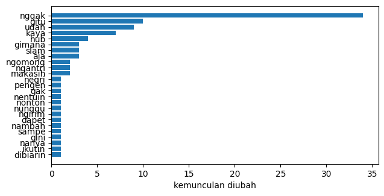
pd.DataFrame([{"kata": w, "kemunculan": post_counts[w],
"padanan kamus": replace_slang(w)}
for w in sorted(post_counts)
if replace_slang(w) != w]).head(20)
| kata | kemunculan | padanan kamus | |
|---|---|---|---|
| 0 | ade | 2 | adek |
| 1 | bhs | 2 | bahasa |
| 2 | bkn | 1 | bukan |
| 3 | cape | 1 | capek |
| 4 | dapet | 1 | dapat |
| 5 | dengerin | 1 | mendengarkan |
| 6 | fans | 1 | fan |
| 7 | indo | 1 | indonesia |
| 8 | kaya | 2 | kayak |
| 9 | kek | 2 | kayak |
| 10 | kri | 1 | kiri |
| 11 | mbg | 2 | mbak |
| 12 | minta | 19 | meminta |
| 13 | nangis | 1 | menangis |
| 14 | nentuin | 1 | menentukan |
| 15 | nyobain | 1 | mencoba |
| 16 | pede | 1 | percaya diri |
| 17 | pgn | 1 | pengin |
| 18 | sam | 4 | sama |
| 19 | slam | 3 | salam |
POS Tagging#
Setiap token dilabeli kategori gramatikal sebelum stopword dibuang. Tagger
dilatih pada kalimat utuh: kata fungsi seperti dan atau di memberi konteks
untuk menebak kata di sekitarnya, dan bentuk infleksi (berimbuhan) adalah masukan
aslinya. Dipakai model RoBERTa bahasa Indonesia (tagset POSP) lewat
transformers. Model hanya menerima 512 subword per panggilan, jadi dokumen
panjang dipecah menjadi potongan yang diproses bergantian; dengan agregasi, satu
label keluar untuk setiap kata.
%pip install torch
Requirement already satisfied: torch in c:\users\zulfr\appdata\local\programs\python\python310\lib\site-packages (2.14.0)
Requirement already satisfied: filelock in c:\users\zulfr\appdata\local\programs\python\python310\lib\site-packages (from torch) (4.0.1)
Requirement already satisfied: typing-extensions>=4.10.0 in c:\users\zulfr\appdata\roaming\python\python310\site-packages (from torch) (4.15.0)
Requirement already satisfied: setuptools>=77.0.3 in c:\users\zulfr\appdata\local\programs\python\python310\lib\site-packages (from torch) (84.0.0)
Requirement already satisfied: sympy>=1.13.3 in c:\users\zulfr\appdata\local\programs\python\python310\lib\site-packages (from torch) (1.14.0)
Requirement already satisfied: networkx>=2.5.1 in c:\users\zulfr\appdata\local\programs\python\python310\lib\site-packages (from torch) (3.4.2)
Requirement already satisfied: jinja2 in c:\users\zulfr\appdata\local\programs\python\python310\lib\site-packages (from torch) (3.1.6)
Requirement already satisfied: fsspec>=0.8.5 in c:\users\zulfr\appdata\local\programs\python\python310\lib\site-packages (from torch) (2026.9.0)
Requirement already satisfied: mpmath<1.4,>=1.1.0 in c:\users\zulfr\appdata\local\programs\python\python310\lib\site-packages (from sympy>=1.13.3->torch) (1.3.0)
Requirement already satisfied: MarkupSafe>=2.0 in c:\users\zulfr\appdata\local\programs\python\python310\lib\site-packages (from jinja2->torch) (3.0.3)
Note: you may need to restart the kernel to use updated packages.
[notice] A new release of pip is available: 26.1.1 -> 26.2.1
[notice] To update, run: python.exe -m pip install --upgrade pip
from transformers import pipeline
import torch
import logging
import warnings
warnings.filterwarnings("ignore", message="IProgress not found")
logging.getLogger("transformers").setLevel(logging.ERROR)
warnings.filterwarnings("ignore", message="Asking to truncate to max_length")
warnings.filterwarnings("ignore",
message="Tokenizer does not support real words")
pos_pipe = pipeline(
"token-classification",
model="w11wo/indonesian-roberta-base-posp-tagger",
aggregation_strategy="average",
device=0 if torch.cuda.is_available() else -1,
)
c:\Users\zulfr\AppData\Local\Programs\Python\Python310\lib\site-packages\huggingface_hub\file_download.py:150: UserWarning: `huggingface_hub` cache-system uses symlinks by default to efficiently store duplicated files but your machine does not support them in C:\Users\zulfr\.cache\huggingface\hub\models--w11wo--indonesian-roberta-base-posp-tagger. Caching files will still work but in a degraded version that might require more space on your disk. This warning can be disabled by setting the `HF_HUB_DISABLE_SYMLINKS_WARNING` environment variable. For more details, see https://huggingface.co/docs/huggingface_hub/how-to-cache#limitations.
To support symlinks on Windows, you either need to activate Developer Mode or to run Python as an administrator. In order to activate developer mode, see this article: https://docs.microsoft.com/en-us/windows/apps/get-started/enable-your-device-for-development
warnings.warn(message)
Loading weights: 100%|██████████| 199/199 [00:01<00:00, 166.57it/s]
wsize_budget = 400
tok = pos_pipe.tokenizer
assert tok is not None
tag_total = Counter()
sample_rows = []
annotations = []
sample_pos = set(df.drop_duplicates("label").index + 1)
piece_len = [[len(tok(t, add_special_tokens=False).input_ids) for t in d]
for d in final_docs]
for doc_idx, (tokens, plen) in enumerate(zip(final_docs, piece_len),
start=1):
windows, cur, acc = [], [], 0
for t, p in zip(tokens, plen):
if cur and acc + p > wsize_budget:
windows.append(cur)
cur, acc = [t], p
else:
cur.append(t)
acc += p
if cur:
windows.append(cur)
tags = []
for win in windows:
out = pos_pipe([win], is_split_into_words=True)[0]
for hit in out:
tag_total[hit["entity_group"]] += 1
tags.append(hit["entity_group"])
annotations.append(tags)
if doc_idx in sample_pos:
sample_rows.extend({"id": doc_idx, "token": w, "tag": t}
for w, t in zip(tokens[:12], tags[:12]))
pd.DataFrame(sample_rows)
| id | token | tag | |
|---|---|---|---|
| 0 | 1 | Marc | NNP |
| 1 | 1 | Marquez | NNP |
| 2 | 1 | Disebut | VBP |
| 3 | 1 | di | PPO |
| 4 | 1 | Puncak | NNO |
| 5 | 1 | Karier | NNO |
| 6 | 1 | Bahasan | NNO |
| 7 | 1 | Cedera | ADJ |
| 8 | 1 | Tak | NEG |
| 9 | 1 | Lagi | ADV |
| 10 | 1 | Relevan | NNP |
| 11 | 1 | Marc | NNP |
| 12 | 101 | Penempatan | NNO |
| 13 | 101 | Manajer | NNO |
| 14 | 101 | Kopdes | NNO |
| 15 | 101 | Ditargetkan | VBP |
| 16 | 101 | Paling | ADV |
| 17 | 101 | Lambat | NNO |
| 18 | 101 | September | NNP |
| 19 | 101 | Menteri | NNO |
| 20 | 101 | Koperasi | NNO |
| 21 | 101 | Menkop | NNO |
| 22 | 101 | Ferry | NNP |
| 23 | 101 | Juliantono | NNP |
fig, ax = plt.subplots(figsize=(7, 4))
rows = tag_total.most_common(12)
ax.barh([t for t, _ in rows], [n for _, n in rows])
ax.set_xlabel("jumlah token")
ax.invert_yaxis()
plt.show()
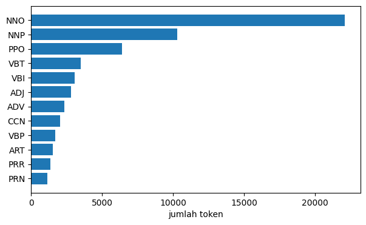
Stopword Removal#
Stopword adalah kata umum yang hampir tanpa makna dan muncul di hampir semua dokumen (misal yang, di, dan). Daftar Sastrawi dipakai untuk membuangnya, sehingga kosakata mengecil dan bobot TF-IDF nanti terfokus pada kata pembeda.
docs_no_stop = [[w for w in d if w.lower() not in id_stopwords]
for d in final_docs]
removed = Counter(w.lower() for d in final_docs for w in d
if w.lower() in id_stopwords)
before_tokens = sum(len(d) for d in final_docs)
before_uniq = len({w.lower() for d in final_docs for w in d})
after_tokens = sum(len(d) for d in docs_no_stop)
after_uniq = len({w.lower() for d in docs_no_stop for w in d})
pd.DataFrame({
"metrik": ["token total", "kata unik", "stopword dihapus",
"jenis stopword"],
"sebelum": [before_tokens, before_uniq, "-", "-"],
"sesudah": [after_tokens, after_uniq, sum(removed.values()), len(removed)],
})
| metrik | sebelum | sesudah | |
|---|---|---|---|
| 0 | token total | 63771 | 48007 |
| 1 | kata unik | 7161 | 7054 |
| 2 | stopword dihapus | - | 15764 |
| 3 | jenis stopword | - | 107 |
pd.DataFrame([{"kata": w, "dihapus": n}
for w, n in removed.most_common(20)])
| kata | dihapus | |
|---|---|---|
| 0 | di | 1398 |
| 1 | yang | 1347 |
| 2 | dan | 1267 |
| 3 | ini | 706 |
| 4 | dari | 699 |
| 5 | dengan | 687 |
| 6 | untuk | 565 |
| 7 | dalam | 463 |
| 8 | juga | 423 |
| 9 | pada | 422 |
| 10 | akan | 382 |
| 11 | itu | 376 |
| 12 | ke | 347 |
| 13 | kami | 263 |
| 14 | tidak | 250 |
| 15 | saya | 248 |
| 16 | ada | 240 |
| 17 | bisa | 207 |
| 18 | sebagai | 206 |
| 19 | sudah | 198 |
fig, ax = plt.subplots(figsize=(7, 4))
rows = removed.most_common(20)
ax.barh([w for w, _ in rows], [n for _, n in rows])
ax.set_xlabel("kemunculan dihapus")
ax.invert_yaxis()
plt.show()
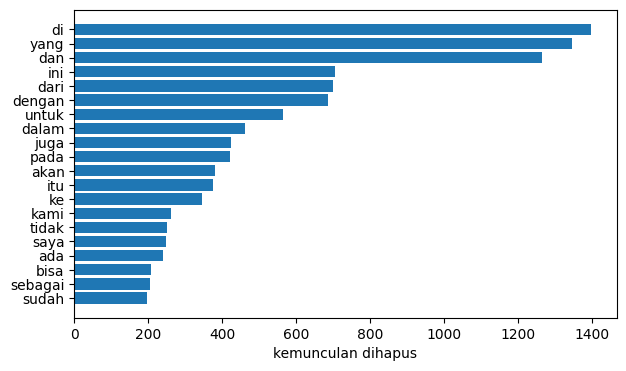
sample_ids = list(df.drop_duplicates("label")["id"])
pd.DataFrame({
"id": sample_ids,
"sebelum": [" ".join(final_docs[i - 1][:16]) for i in sample_ids],
"sesudah": [" ".join(docs_no_stop[i - 1][:16]) for i in sample_ids],
})
| id | sebelum | sesudah | |
|---|---|---|---|
| 0 | 1 | Marc Marquez Disebut di Puncak Karier Bahasan ... | Marc Marquez Disebut Puncak Karier Bahasan Ced... |
| 1 | 101 | Penempatan Manajer Kopdes Ditargetkan Paling L... | Penempatan Manajer Kopdes Ditargetkan Paling L... |
Stemming#
Stemming memotong afiks supaya kata sekeluarga kembali ke kata dasar, misal
menambahkan menjadi tambah. Kosakata mengecil dan dokumen dengan bentuk kata
berbeda bisa saling cocok. Risikonya over-stemming (kata berbeda arti tersatu),
karena itu nama diri dilindungi lebih dulu.
from Sastrawi.Stemmer.StemmerFactory import StemmerFactory
from Sastrawi.Stemmer.Stemmer import Stemmer
from Sastrawi.Dictionary.ArrayDictionary import ArrayDictionary
from functools import lru_cache
words = StemmerFactory().get_words()
stemmer = Stemmer(ArrayDictionary(words))
@lru_cache(maxsize=None)
def stem_word(token):
return stemmer.stem(token)
protected = {w for w, n in name_counts.items()
if n >= 5 and n >= 0.5 * raw_counts[w]}
def stem_doc(words):
out = []
for w in words:
w = w.lower()
out.append(w if w in protected else stem_word(w))
return out
docs_stem = [stem_doc(d) for d in docs_no_stop]
st_tokens = sum(len(d) for d in docs_stem)
st_uniq = len({w for d in docs_stem for w in d})
pd.DataFrame({
"metrik": ["token total", "kata unik"],
"sebelum": [after_tokens, after_uniq],
"sesudah": [st_tokens, st_uniq],
})
| metrik | sebelum | sesudah | |
|---|---|---|---|
| 0 | token total | 48007 | 48007 |
| 1 | kata unik | 7054 | 4970 |
stem_map = Counter()
for a, b in zip([w for d in docs_no_stop for w in d],
[w for d in docs_stem for w in d]):
if a != b:
stem_map[(a, b)] += 1
pd.DataFrame([{"token": a, "stem": b, "kemunculan": n}
for (a, b), n in stem_map.most_common(20)])
| token | stem | kemunculan | |
|---|---|---|---|
| 0 | Indonesia | indonesia | 361 |
| 1 | tersebut | sebut | 336 |
| 2 | menjadi | jadi | 336 |
| 3 | Jakarta | jakarta | 288 |
| 4 | MotoGP | motogp | 185 |
| 5 | Marquez | marquez | 163 |
| 6 | Games | games | 127 |
| 7 | Marc | marc | 121 |
| 8 | Asian | asian | 116 |
| 9 | Prabowo | prabowo | 116 |
| 10 | Purbaya | purbaya | 105 |
| 11 | Suahasil | suahasil | 98 |
| 12 | balapan | balap | 97 |
| 13 | LRT | lrt | 97 |
| 14 | Bezzecchi | bezzecchi | 96 |
| 15 | San | san | 93 |
| 16 | dilakukan | laku | 93 |
| 17 | Marino | marino | 92 |
| 18 | Menteri | menteri | 88 |
| 19 | bagian | bagi | 86 |
fig, ax = plt.subplots(figsize=(7, 4.2))
rows = stem_map.most_common(20)
ax.barh([f"{a} -> {b}" for (a, b), _ in rows], [n for _, n in rows])
ax.set_xlabel("kemunculan")
ax.invert_yaxis()
plt.show()
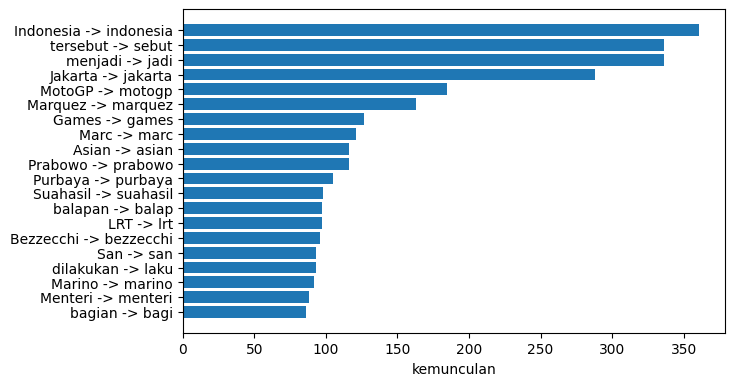
Name Guard#
Kandidat nama dihimpun dari aturan kapital di tengah kalimat, lalu dilindungi bila kapital itu dominan (minimal lima kemunculan dan setengah dari semua bentuk tulisannya). Nama yang kata dasarnya runtuh saat di-stem, seperti pada tabel di bawah, menunjukkan mengapa perlindungan ini perlu.
risky = [(w, stem_word(w)) for w in sorted(protected)
if stem_word(w) != w]
pd.DataFrame(risky, columns=["nama", "runtuh menjadi"])
| nama | runtuh menjadi | |
|---|---|---|
| 0 | anggaran | anggar |
| 1 | asian | asi |
| 2 | bali | bal |
| 3 | bekasi | bekas |
| 4 | dicopot | copot |
| 5 | hadi | had |
| 6 | kementerian | menteri |
| 7 | kepresidenan | presiden |
| 8 | keuangan | uang |
| 9 | maluku | malu |
| 10 | memen | pen |
| 11 | mentan | tan |
| 12 | panahan | panah |
| 13 | pegadaian | gadai |
| 14 | pekerja | kerja |
| 15 | pelabuhan | labuh |
| 16 | pencari | cari |
| 17 | pengelola | kelola |
| 18 | peraturan | atur |
| 19 | perhubungan | hubung |
| 20 | pertanahan | tanah |
| 21 | rokan | rok |
| 22 | rosan | ros |
| 23 | sederet | deret |
top_names = {w for w, _ in name_counts.most_common(80)}
altered = [(a, b) for (a, b), _ in stem_map.items()
if b != a.lower() and a.lower() in top_names]
pd.DataFrame({
"metrik": ["nama dilindungi", "kata unik nama teratas berubah"],
"nilai": [len(protected), len(altered)],
})
| metrik | nilai | |
|---|---|---|
| 0 | nama dilindungi | 514 |
| 1 | kata unik nama teratas berubah | 4 |
Unique Word Extraction#
Sklearn menghitung seluruh kata unik dari token hasil stemming. Di samping total kosakata, kata unik juga dihitung per label dan irisannya, untuk melihat seberapa berbeda kosakata sport dan finance sebelum tabel fitur disusun.
from sklearn.feature_extraction.text import CountVectorizer
counter = CountVectorizer(token_pattern=r"(?u)\b\w\w+\b")
counter.fit([" ".join(d) for d in docs_stem])
vocab = counter.get_feature_names_out()
sport_vocab = {w for d, lbl in zip(docs_stem, df["label"])
if lbl == "sport" for w in set(d)}
finance_vocab = {w for d, lbl in zip(docs_stem, df["label"])
if lbl == "finance" for w in set(d)}
pd.DataFrame({
"kelompok": ["seluruh korpus", "label sport", "label finance",
"dipakai kedua label"],
"kata unik": [len(vocab), len(sport_vocab), len(finance_vocab),
len(sport_vocab & finance_vocab)],
})
| kelompok | kata unik | |
|---|---|---|
| 0 | seluruh korpus | 4970 |
| 1 | label sport | 3090 |
| 2 | label finance | 3086 |
| 3 | dipakai kedua label | 1206 |
TF-IDF Representation#
TF-IDF (term frequency × inverse document frequency) memberi bobot besar pada kata yang khas dalam satu dokumen dan bobot kecil pada kata umum, sehingga lebih tegas daripada sekadar frekuensi. Vektor hasilnya menjadi dataset siap model dan disimpan dalam bentuk sparse; tabel tampilan dibuat terpisah karena matriks padatnya lebih mudah diperiksa.
from sklearn.feature_extraction.text import TfidfVectorizer
vectorizer = TfidfVectorizer(token_pattern=r"(?u)\b\w\w+\b")
X = vectorizer.fit_transform([" ".join(d) for d in docs_stem])
pd.DataFrame({
"metrik": ["dokumen", "fitur", "entri bukan nol (nnz)"],
"nilai": [X.shape[0], X.shape[1], X.nnz],
})
| metrik | nilai | |
|---|---|---|
| 0 | dokumen | 200 |
| 1 | fitur | 4970 |
| 2 | entri bukan nol (nnz) | 25786 |
Final TF-IDF Table#
Matriks sparse sulit dibaca manusia, jadi tabel di bawah diubah ke bentuk padat:
baris dokumen, kolom kata, dan label kelas di kolom terakhir. Ukuran tabel
dicetak sebagai bukti bahwa label memang ikut tercantum. Kolom kelas diberi nama
label_kelas agar tidak bentrok dengan kata yang mungkin menjadi fitur TF-IDF.
import numpy as np
feature_names = vectorizer.get_feature_names_out()
df_tfidf = pd.DataFrame(X.toarray(), index=df["id"], columns=feature_names)
df_tfidf["label_kelas"] = df["label"].values
df_tfidf.shape
(200, 4971)
word_freq = np.asarray(X.sum(axis=0)).ravel()
top_idx = np.argsort(-word_freq)[:10]
pd.DataFrame({"kata": feature_names[top_idx],
"bobot total": word_freq[top_idx]})
| kata | bobot total | |
|---|---|---|
| 0 | jadi | 6.230627 |
| 1 | marquez | 6.146429 |
| 2 | motogp | 6.047365 |
| 3 | jakarta | 5.931436 |
| 4 | indonesia | 5.918221 |
| 5 | balap | 5.791675 |
| 6 | sebut | 4.865899 |
| 7 | games | 4.664614 |
| 8 | marc | 4.515614 |
| 9 | poin | 4.468262 |
df_tfidf[[feature_names[i] for i in top_idx] + ["label_kelas"]].head()
| jadi | marquez | motogp | jakarta | indonesia | balap | sebut | games | marc | poin | label_kelas | |
|---|---|---|---|---|---|---|---|---|---|---|---|
| id | |||||||||||
| 1 | 0.044043 | 0.070448 | 0.100059 | 0.000000 | 0.000000 | 0.061709 | 0.068965 | 0.000000 | 0.498898 | 0.228751 | sport |
| 2 | 0.047550 | 0.000000 | 0.000000 | 0.000000 | 0.000000 | 0.000000 | 0.000000 | 0.000000 | 0.000000 | 0.000000 | sport |
| 3 | 0.019656 | 0.000000 | 0.267932 | 0.000000 | 0.000000 | 0.185896 | 0.011542 | 0.000000 | 0.000000 | 0.043752 | sport |
| 4 | 0.011670 | 0.000000 | 0.000000 | 0.000000 | 0.072262 | 0.000000 | 0.041114 | 0.000000 | 0.000000 | 0.000000 | sport |
| 5 | 0.070585 | 0.000000 | 0.000000 | 0.016895 | 0.109271 | 0.000000 | 0.059211 | 0.048387 | 0.000000 | 0.000000 | sport |
Sparse Check#
Tabel padat hanya untuk tampilan; matriks asli tetap sparse. Sebagai bukti, dihitung jumlah sel yang nilainya lebih dari nol: hasilnya harus sama dengan entri bukan nol (nnz) pada tabel metrik sebelumnya.
(df_tfidf.drop(columns="label_kelas").to_numpy() > 0).sum()
np.int64(25786)
col_tot = np.asarray(X.sum(axis=0)).ravel()
col_freq = np.asarray((X > 0).sum(axis=0)).ravel()
informative = [i for i in np.argsort(-col_tot) if col_freq[i] >= 2][:8]
rows = [0, 45, 99, 100, 150, 199]
sub = pd.DataFrame(
X[rows][:, informative].toarray(),
index=[f"{df['id'].iloc[i]}-{df['label'].iloc[i]}" for i in rows],
columns=[feature_names[i] for i in informative],
)
sub
| jadi | marquez | motogp | jakarta | indonesia | balap | sebut | games | |
|---|---|---|---|---|---|---|---|---|
| 1-sport | 0.044043 | 0.070448 | 0.100059 | 0.000000 | 0.000000 | 0.061709 | 0.068965 | 0.0 |
| 46-sport | 0.014216 | 0.238758 | 0.258372 | 0.000000 | 0.000000 | 0.149386 | 0.000000 | 0.0 |
| 100-sport | 0.000000 | 0.000000 | 0.000000 | 0.000000 | 0.025265 | 0.000000 | 0.000000 | 0.0 |
| 101-finance | 0.013472 | 0.000000 | 0.000000 | 0.000000 | 0.000000 | 0.000000 | 0.031643 | 0.0 |
| 151-finance | 0.014751 | 0.000000 | 0.000000 | 0.321301 | 0.000000 | 0.000000 | 0.086617 | 0.0 |
| 200-finance | 0.009637 | 0.000000 | 0.000000 | 0.000000 | 0.014918 | 0.000000 | 0.000000 | 0.0 |
fig, ax = plt.subplots(figsize=(8, 3.6))
sns.heatmap(sub.values, cmap="viridis", annot=True, fmt=".2f",
xticklabels=sub.columns.astype(str).tolist(),
yticklabels=sub.index.astype(str).tolist(), ax=ax)
ax.set_ylabel("dokumen (id-label)")
plt.show()
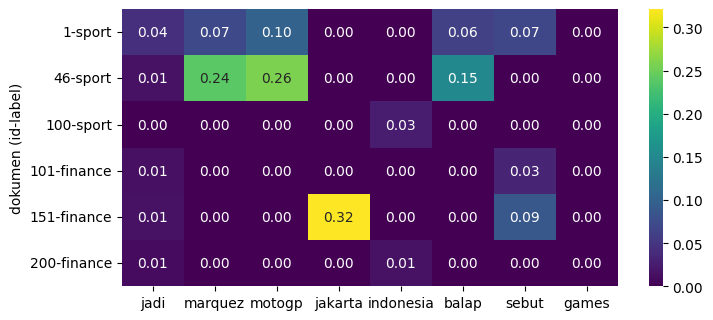
import os
import scipy.sparse as sp
sp.save_npz("tfidf_sparse.npz", X)
pd.Series(feature_names).to_csv("tfidf_features.txt",
index=False, header=False)
pd.DataFrame({"id": df["id"], "label": df["label"]}).to_csv(
"tfidf_docs.csv", index=False)
pd.DataFrame({
"berkas": ["tfidf_sparse.npz", "tfidf_features.txt", "tfidf_docs.csv"],
"ukuran (byte)": [os.path.getsize("tfidf_sparse.npz"),
os.path.getsize("tfidf_features.txt"),
os.path.getsize("tfidf_docs.csv")],
})
| berkas | ukuran (byte) | |
|---|---|---|
| 0 | tfidf_sparse.npz | 164718 |
| 1 | tfidf_features.txt | 40410 |
| 2 | tfidf_docs.csv | 2302 |
Dimensionality Reduction#
Matriks TF-IDF berdimensi ribuan dan sparse, sehingga membawa banyak dimensi kosong yang bakal memperlambat dan melemahkan model selanjutnya. PCA memproyeksikan matriks ke komponen utama yang saling bebas: dua komponen dulu digunakan untuk melihat sebaran awal, lalu seluruh komponen untuk membaca seberapa cepat varians terkumpul.
from sklearn.decomposition import PCA
pca2 = PCA(n_components=2, random_state=42)
Z = pca2.fit_transform(X.toarray())
evr2 = pca2.explained_variance_ratio_
pd.DataFrame({
"komponen": ["PC1", "PC2", "jumlah"],
"proporsi varians": [f"{evr2[0]:.4f}", f"{evr2[1]:.4f}",
f"{evr2.sum():.4f}"],
})
| komponen | proporsi varians | |
|---|---|---|
| 0 | PC1 | 0.0463 |
| 1 | PC2 | 0.0333 |
| 2 | jumlah | 0.0796 |
fig, ax = plt.subplots(figsize=(7, 5))
for label in ["sport", "finance"]:
mask = (df["label"] == label).to_numpy()
ax.scatter(Z[mask, 0], Z[mask, 1], s=18, alpha=0.7, label=label)
ax.set_xlabel("PC1")
ax.set_ylabel("PC2")
ax.legend(title="label")
plt.show()
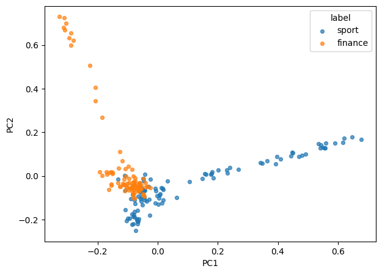
Cumulative Variance#
Tujuan akhirnya mereduksi ke dimensi di bawah 500. Karena dokumen hanya 200, komponen maksimum yang bisa dihitung juga 200, sehingga seluruh titik pada kurva otomatis memenuhi target itu; angka per ambang dihitung dari output di bawah.
max_comp = min(X.shape)
pca_all = PCA(n_components=max_comp, random_state=42).fit(X.toarray())
cum = pca_all.explained_variance_ratio_.cumsum()
pd.DataFrame([{"target varians": t,
"komponen dibutuhkan": int((cum >= t).argmax()) + 1,
"komponen < 500": int((cum >= t).argmax()) + 1 < 500}
for t in [0.5, 0.8, 0.9, 0.95]])
| target varians | komponen dibutuhkan | komponen < 500 | |
|---|---|---|---|
| 0 | 0.50 | 46 | True |
| 1 | 0.80 | 109 | True |
| 2 | 0.90 | 139 | True |
| 3 | 0.95 | 159 | True |
fig, ax = plt.subplots(figsize=(8, 4))
ax.plot(range(1, len(cum) + 1), cum)
for t in [0.5, 0.8, 0.9]:
ax.axhline(t, color="gray", ls="--", lw=0.8)
ax.set_xlabel("jumlah komponen")
ax.set_ylabel("varians kumulatif")
plt.show()
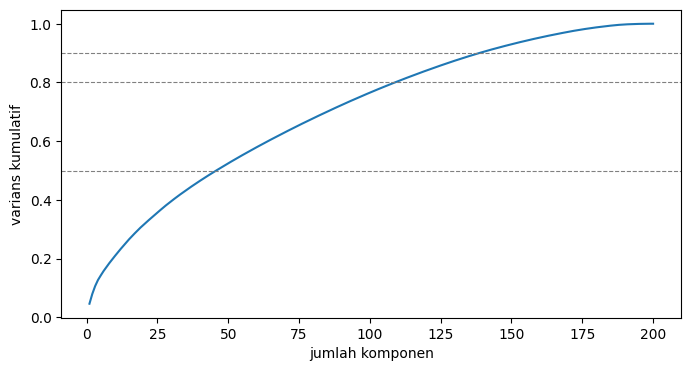
chosen = int((cum >= 0.9).argmax()) + 1
pd.DataFrame({
"metrik": ["fitur TF-IDF", "komponen terpilih (90%)",
"pengurangan dimensi", "varians dua komponen"],
"nilai": [X.shape[1], chosen,
f"{1 - chosen / X.shape[1]:.1%}", f"{evr2.sum():.2%}"],
})
| metrik | nilai | |
|---|---|---|
| 0 | fitur TF-IDF | 4970 |
| 1 | komponen terpilih (90%) | 139 |
| 2 | pengurangan dimensi | 97.2% |
| 3 | varians dua komponen | 7.96% |
from IPython.display import Markdown, display
def ribu(n):
return f"{n:,}".replace(",", ".")
def desimal(x, d=2):
return f"{x:.{d}f}".replace(".", ",")
pct_id = desimal(100 * lang_counts.get("id", 0) / len(sentences), 1)
display(Markdown(f"""## Conclusion
Seluruh proses dapat diringkas sebagai satu rantai sebab-akibat. Eksplorasi
menemukan sisa antarmuka detik.com ({ribu(n_boiler)} artikel) dan artefak format
(URL, mata uang, komposit berangka, angka Romawi, token satu-dua huruf) yang
menentukan aturan pembersihan; deteksi bahasa menegaskan korpus ini berita
Indonesia ({pct_id}% kalimat berlabel Indonesia) sehingga sisipan asing dianggap
nama atau istilah; slang dibakukan dengan nama diri yang dilindungi. Sebelum
stopword dibuang, {ribu(before_tokens)} token dilabeli kategori gramatikal
sebagai anotasi analisis. Stopword dan stemming mengecilkan kosakata dari
{ribu(before_uniq)} kata unik menjadi {ribu(st_uniq)}, dan hasilnya dipetakan
menjadi matriks TF-IDF {X.shape[0]} dokumen x {ribu(X.shape[1])} fitur yang
disimpan ke `data/`. PCA mempertahankan hingga 90% varians dengan {chosen}
komponen (di bawah 500), sedangkan proyeksi dua komponen hanya menahan
{desimal(100 * evr2.sum())}% varians, cukup untuk gambaran awal sebaran, tidak
untuk analisis lanjutan."""))
Conclusion
Seluruh proses dapat diringkas sebagai satu rantai sebab-akibat. Eksplorasi
menemukan sisa antarmuka detik.com (197 artikel) dan artefak format
(URL, mata uang, komposit berangka, angka Romawi, token satu-dua huruf) yang
menentukan aturan pembersihan; deteksi bahasa menegaskan korpus ini berita
Indonesia (77,9% kalimat berlabel Indonesia) sehingga sisipan asing dianggap
nama atau istilah; slang dibakukan dengan nama diri yang dilindungi. Sebelum
stopword dibuang, 63.771 token dilabeli kategori gramatikal
sebagai anotasi analisis. Stopword dan stemming mengecilkan kosakata dari
7.161 kata unik menjadi 4.970, dan hasilnya dipetakan
menjadi matriks TF-IDF 200 dokumen x 4.970 fitur yang
disimpan ke data/. PCA mempertahankan hingga 90% varians dengan 139
komponen (di bawah 500), sedangkan proyeksi dua komponen hanya menahan
7,96% varians, cukup untuk gambaran awal sebaran, tidak
untuk analisis lanjutan.